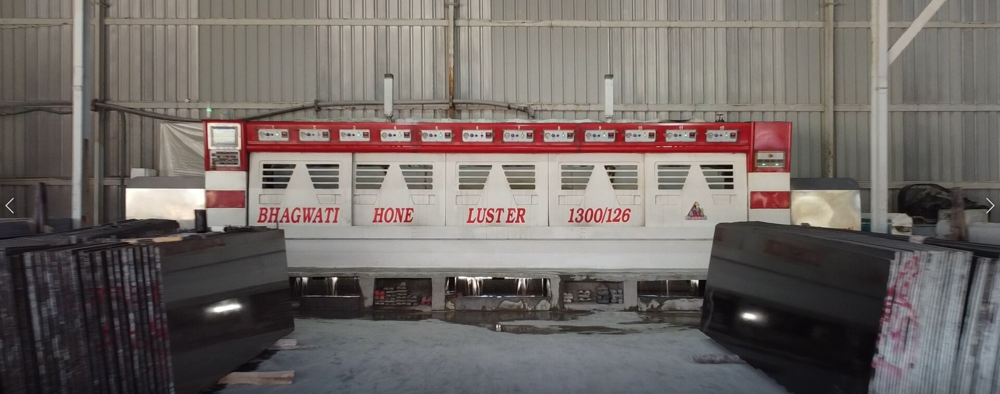
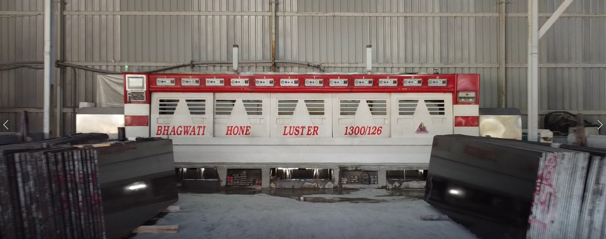

Infrastructure
Our company’s infrastructure includes those
facilities and equipment required to
carry out each and every phase of the production cycle. Keeping innovation in mind we have processed
exquisite materials and finishes based on the most fierce market competition. We are working with a
professional team that establishes and maintains to deliver the highest quality products and warmest
customer service.
Our state of the art factory includes
Gangsaw machine for cutting the slabs into required thickness.
Multi-Blade Cutters for cutting slabs into high precision thickness.
Automatic Resin line for perfect sealing and good finish.
Block dressing machine and mono wire saw machine
Tower cranes & E.O.T. Crane
Tiling plant & Bridge cutters
Line Polish Machine to process slabs into different finishes
Gloss measuring devices to
check the gloss of polished slabs.

 
